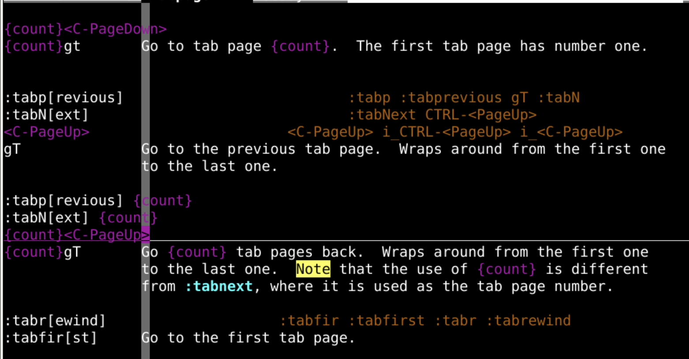
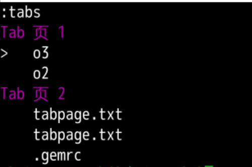
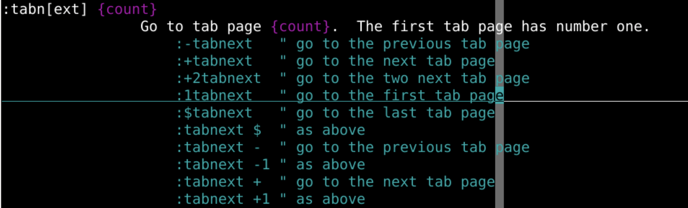
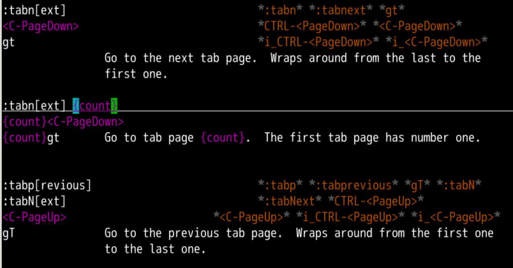

:windo:bufdo:argdo{cmd}可以用｜按顺序增加windows 窗口buffers 缓存文件arguments 参数文件zszewindow 窗口容器80*24 的屏幕资源很快就用完了tab选项卡vi ooo:tabnew oeasy.txtoeasy.txt:tabs查看当前有几个tab里面分别打开着什么:tabnew h gt:tabnew ./oeasy.java:tabnew ~/.vimrctabs切换:tabclose 关闭当前tab:tabonly 只保留当前的tab
tab中再分windowtab水平方向分成两个window:split o2和o3tab先水平window:split 和 :vsplit:tabs
window tab 页 1的o3这个windowcurrent窗口window:wa:wqa:qa:qa!tab选项卡window窗口buffer缓存:b1 把当前窗口位置显示 buffer1缓存内容 :hid[e] 可以在当前的 tab选项卡 隐藏当前窗口window窗口 中 buffer缓存 不保存autowrite:on[ly] 可以在当前的 tab选项卡 window窗口:hide 状态
tab1跳转到第1个tabtab2跳转到第2个tabtab3跳转到第3个tabtab5跳转到第5个tab:-tabmove 当前选项卡左移动:+tabmove 当前选项卡右移动:0tabmove 当前选项卡移动到最左边:tabmove 0 当前选项卡移动到最左边:tab help gt vim -p file1.js file2.js file3.jswindow打开文件vim -o file1.js file2.js file3.jsvim -O file1.js file2.js file3.js
:tabn和:tabp可以切换标签页gt、gT、1gtarguments参数列表:args:arga:argd:argdobuffers缓存列表:ls:e .:b1:bd:bufdotabs选项卡列表:tabs:tabnew:tabc:tabdowindows窗口列表 :sp、:vsp:q:windotabs选项卡tabs选项卡 包括多个选项卡tabtabtab选项卡 还对应多个windowwindow 对比不同tab - :tabnewtab - gt、gTtab - 1gt 2gt 3gttab - :tabctab - :tabs